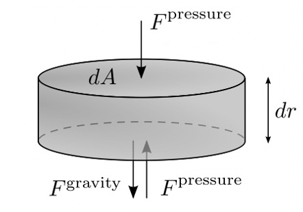
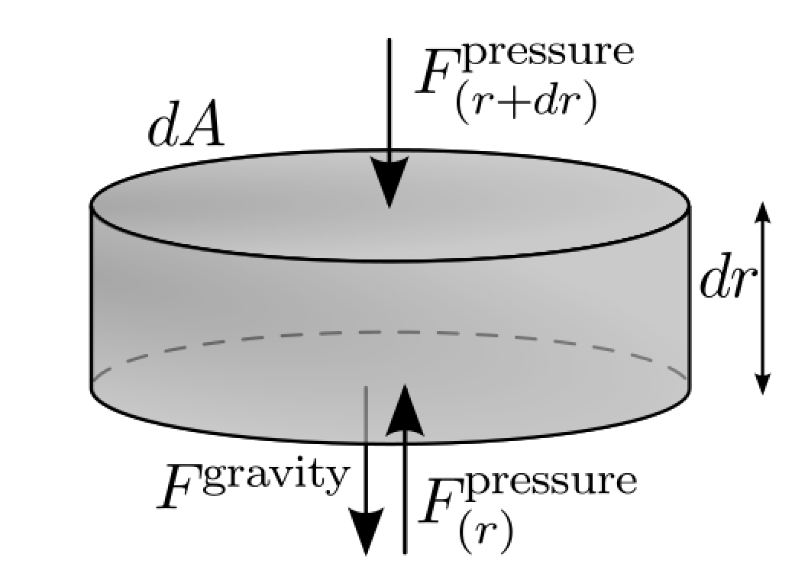

Du må bruke presentasjonsmodus/fullskjermsvisning for å lese denne, men du skal ikke bruke frem/tilbake-knappene, KUN knappene som dukker opp på sliden for å ta deg videre! Ofte må du laste filen ned til maskinen din og åpne den der for å få til dette. Merk at noen knapper vil åpne nettskjema, videoer eller andre ressurser i internettbrowseren din. Når du gjør det riktig, skal du kun se en side av gangen, og når du trykker på knappene som dukker opp på skjermen så skal disse ta deg frem/tilbake i dokumentet. Du vil miste mye læringsutbytte hvis du ser flere slides av gangen. Får du det ikke til, spør foreleser/gruppelærer!
Trykk denne knappen for å begynne
Dette er en erstatning for forelesningen i emnet. Har du gått skikkelig gjennom disse interaktive forelesningsnotatene så trenger du ikke å lese de fulle forelesningsnotatene (med unntak av oppgavene bak). All informasjonen du trenger, får du her. Du kommer til å få mange grublespørsmål og diskusjonsoppgaver, det er meningen at disse skal gjøres i grupper av minst 2, maks 4 studenter. Det er defor sterkt anbefalt at dere sitter sammen i grupper når dere går gjennom disse interaktive forelesningsnotatene, du vil få betydelig mer utbytte av dem på den måten. En god ide kan være å bli enige om å treffes til den faste forelesningstiden og bruke forelesningslokalet som kommer til å være resevert til dette. Hvis du har kommentarer ris/ros til disse forelesningsnotatene eller til emnet, trykk på 🙂 🙁 knappen som du finner på alle sider.
Trykk denne knappen for å begynne
Forrige side
Velkommen til del 1E! Her skal vi bruke litt termodynamikk igjen, nå kombinert med gravitasjonskrefter. Både i planetatmosfærer og inne i en stjerne så har vi gass som blir trukket på av tyngdekraften. Men for stabile stjerner og stabile atmosfærer så er det noe som trykker tilbake og gjør at at disse ikke kollapser. Vi skal her utlede en kraftfull likning som gjør av vi kan lære mye om et slikt system (som atmosfærer eller en stjernes oppbygging) utifra det enkle faktum at det er stabilt.
Er du klar?
Neste side
Forrige side🙂 🙁Introduksjon
Vi begynner som vanlig... ...med litt brainstorming. Som det er svært viktig at du gjør før du går videre.
Trykk her for å varme opp
Er du klar og har sendt inn skjemaet? Nei Ja
Nytt tema:
Hydrostatisk likevekt
Forrige side🙂 🙁Hydrostatisk likevekt
Fant du svar på spørsmålene på skjemaet? Innså du at trykket kan ha en rolle i å gi motkraft til gravitasjon?
Her ser vi et bittelite element av gassen med masse dm. Gravitasjonskrafta prøver å trekke gasselementet nedover mens trykket virker oppover og motvirker krafta? Er det slik det funker? Altså siden $$P=\frac{F}{A}$$ så får vi en kraft F = PdA der dA er arealet av det bittelille gasselementet? Tja, noe sånt må det vel væreMjaaaa, må tenke litt på’n
Forrige side🙂 🙁Hydrostatisk likevekt
Vi zoomer nå inn på dette gasselementet som vi har valgt her til å være sylindrisk med sideflateareal dA og høyde dr.

Her ser vi kreftene tegnet inn. Enig i at gravitasjon virker kun nedover? Også enig i at trykket ikke kun virker oppover, gasstrykk virker jo fra alle kanter, ikke sant? Dermed vil vel gasstrykket ovenfra kanselere gasstrykket nedenfra? Og vi er like langt...? Gravitasjon vinner igjen fordi kreftene fra gass-trykket kanselerer hverandre? Og dermed faller solen sammen til et sort hull og atmosfæren vår faller ned! Ikke det som skjer i virkeligheten sier du? Hvorfor ikke det da??? Nåde deg hvis du trykker her uten å ha tenkt deg om først!
Forrige side🙂 🙁Hydrostatisk likevekt
Jeg vet svaret!!!
Jeg klarer ikke å se det
Jeg tenkte egentlig ikke så nøye gjennom...
Forrige side🙂 🙁Hydrostatisk likevekt
OK da! Så kanskje gasstrykket ikke er det samme i alle høyder r? Jammen det stemmer jo i atmosfæren vår ihvertfall. Der minker jo trykket med høyden slik at trykket er en funksjon av avstand r fra jordas sentrum. Siden gass-elementet vårt er infinitesimalt lite så er høydeforskjellen over og under infinitesimalt liten, den er dr, men da blir vel også trykkforskjellen dP mellom trykket ovenfra og trykket nedenfra infinitesimalt liten? La oss illustrere det her:

Neste side
Forrige side🙂 🙁Hydrostatisk likevekt
Javel! Den bittelitte trykforskljellen dP må altså være slik at trykk-krafta er større undenfra enn ovenfra. Men en en infinitesimal liten trykkforsjell dP må vel gi opphav til en infinitesimal liten kraft undenfra. Hvordan kan denne infinitesimalt lille krafta klare å veie opp mot tyngdekrafta som trekker nedover???
Jeg tror kanskje jeg vet det...
Jeg har tenkt og tenkte, men denne var litt vrien...
Forrige side🙂 🙁Hydrostatisk likevekt
AHA! Javisst ja, massen dm er jo også infinitesimalt lite. Og tyngdekrafta er proporsjonalt med massen, dermed blir også tyngdekrafte infinitesimalt liten. Og da er det ikke så rart at en bitteliten trykk-kraft kan stå imot.
Hydrostatisk likevekt Hvis trykkendringene oppover i atmosfæren eller oppover i stjerna er slik at trykk-krafta undenfra på ethvert område inne i gassen nøyaktig oppveier tyngdekrafta, så vil stjerna eller atmosfæren være stabil. Dette kaller vi hydrostatisk likevekt. Når en stjerne (eller atmosfære) dannes så er den i begynnelsen ikke i en slik likevekt, men siden dette er en energetisk fordelaktig tilstand så vil stjerna med tiden nå en slik likevekt.
Vi skal nå bruke Newtons 2.lov på et slikt masseelement inne i gassen til å utlede en likning som beskriver hvordan et slik gasselement vil akselerere hvis en av kreftene er større enn det andre. Til slutt krever vi at elementet ikke akselererer, altså at vi har hydrostatiskk likevekt. Da får vi likningen for hydrostatisk likevekt. Denne likningen skal vi bruke til bl.a. å modellere atmosfærer og stjerners indre. Neste side
Nytt tema:
Likningen for hydrostatisk likevekt
Forrige side🙂 🙁Likningen for hydrostatisk likevekt
Så lenge trykk er P = F/A og krafta undenfra er gitt ved gasstrykket P(r) i denne høyden, så blir vel kraften undenfra gitt ved Foppover = P(r)dA Og tilsvarende blir vel kraften fra gasstrykket P(r+dr) ovenfra (merk r + dr siden vi er dr høyere opp) Foppover = P(r+dr)dA Får du det til å stemme? Soleklart!Dette tror jeg ikke kan stemme!
Forrige side🙂 🙁Likningen for hydrostatisk likevekt
Hva er det du ikke synes stemmer? Mistenker at du kanskje ikke henger helt med. Ta kontakt med foreleser! Neste side
Forrige side🙂 🙁Likningen for hydrostatisk likevekt
Det er bra vi er enig! Neste side
Forrige side🙂 🙁Likningen for hydrostatisk likevekt
Hva så med gravitasjonskrafta da? Hvis massen av gasselementet er dm, så bli vel det... Trykk her når du har skrevet ned et forslag!
$$F=-G\frac{M(r)dm}{r^2}$$ der M(r) er massen av alt som er under høyden r. Når vi modellerer en atmosfære så vil jo massen til planeten utgjør i praksis hele M(r) slik at M(r) = M der M er massen til planeten. Den lille ekstra massen fra atmosfæren som vi får ettersom vi kommer høyere og høyere opp er forsvinnende liten i forhold til den totalt massen M av planeten.
MEN, situasjonen er derimot en helt annen hvis...
Forrige side🙂 🙁Likningen for hydrostatisk likevekt
Situasjonen er derimot en helt annen hvis vi for eksempel holder på å modellere en stjernes indre:
Her blir den totale massen under posisjonen r tydelig større og større fra r = 0 i sentrum til r = R på overflaten av stjerna. Her må vi ta med r-variasjonen av M(r). Men hvis du ser på figuren, nøyaktig hvilken del av denne stjerna bidrar til massen M(r) som virker med tyngdekraft på dm?? Trykk her når du har et forslag!
Svaret er at kun massen innenfor sirkelen som er avtegnet rett under elementet dm bidrar!. Altså all masse innenfor radiusen r i figuren bidrar til tyngdekraften på dm, men ingenting mer! Hva så med all massen som ligger i skallet rundt denne sirkelen? Hvorfor bidrar det ikke??? Tenk 2 ganger før du trykker her!
Du tenkte bare 1 gang! Tenk en gang til! Trykk her når du er ferdigtenkt
Forrige side🙂 🙁Likningen for hydrostatisk likevekt
Man kan vise at hvis du har et skall med kulesymmetrisk massefordeling så vil den totale gravitasjonskrafta på alt det som er innenfor skallet være 0! Vi skal ikke vise det her, men det finnes en helt analog utledning i elektromagnetisme: den elektriske krafta innenfor et elektrisk ladd kuleskall er 0. Gravitasjonskreftene fra de forskjellige sidene av skallet nuller hverandre ut. Dermed får vi ingen gravitasjonskrefter på dm fra alt som ligger i avstand større enn r fra sentrum. Neste side
Forrige side🙂 🙁Likningen for hydrostatisk likevekt
Vi får altså en total tyngdekraft $$F=-G\frac{M(r)dm}{r^2}$$ på gasselementet med masse dm der M(r) altså er den totale massen av stjerna innenfor radius r. Nå er det vel slik at tyngdeakselrasjonen ved overflaten av en planet med masse M er gitt ved $$g=-G\frac{M}{r^2}$$
Tyngdeakselrasjonen ved gasselementet vårt dm i en avstand r fra sentrum må vel dermed bli $$g(r)=-G\frac{M(r)}{r^2}$$ som insatt gir at kraften på dm kan skrives ved hjelp av g(r) i avstand r fra sentrum som F = g(r)dm Neste side
Forrige side🙂 🙁Likningen for hydrostatisk likevekt
Oppsummert så har vi vel kommet frem til at vi har en tyngdekraft F = g(r)dm som virker nedover, en trykk-kraft P(r)dA som virker oppover og en trykk-kraft P(r+dr)dA som virker nedover. La oss da skrive ned Newtons 2.lov på gass-elementet Ftot = dm a som gir oss $$-F^\mathrm{grav}-F^\mathrm{pressure}(r+dr)+F^\mathrm{pressure}(r)=dm\frac{d^2r}{dt^2}$$ Hvor vi har skrevet posisjonen (høyden) av gasselementet som r og dermed akselrasjonen til gasselementet som den dobbelt tidsderiverte av r.
Forrige side🙂 🙁Likningen for hydrostatisk likevekt
Vi setter nå inn det som vi kjenner i $$-F^\mathrm{grav}-F^\mathrm{pressure}(r+dr)+F^\mathrm{pressure}(r)=dm\frac{d^2r}{dt^2}$$ og får $$-g(r)dm-P(r+dr)dA+P(r)dA=dm\frac{d^2r}{dt^2}$$ Henger du med?? Hvis ikke spør foreleser!
Det neste vi skal gjøre nå er å skrive ut massen av dm ved hjelp av tettheten. Vi antar at gasstettheten er kulesymetrisk, dvs. at all gass i avstand r fra sentrum har samme massetetthet ρ(r). Neste side
Forrige side🙂 🙁Likningen for hydrostatisk likevekt
Kan du se hvordan vi kan skrive dm uttrykt ved hjelp av dr, dA og ρ(r)?? Ja, det er rett fremNei, det var ikke helt rett frem...
Det bør være rett frem! Du kjenner tetthet og du kan finne volum, hva blir da massen? Vi hadde kommet til: $$-g(r)dm-P(r+dr)dA+P(r)dA=dm\frac{d^2r}{dt^2}$$ Ta et stykke papir, skriv ned denne likningen, sett inn for uttrykket ditt for dm. Deretter: Er du enig i at P(r+dr) − P(r) kan skrives som en liten trykkendring dP? Hvis du nå forkorter bort felles faktorer og deler hele likningen på dr, hvordan blir likningen din seendes ut? Neste side
Forrige side Beklager du kan ikke gå videre før du faktisk har gjort jobben. Frem med papir og blyant! Hvis du ikke fullførte utledningen på forrige side, gå tilbake nå. Dette er regning som du bør kunne! Neste side
Forrige side🙂 🙁Likningen for hydrostatisk likevekt
Er du helt sikker på at du har kommet frem til noe? Slutt å mase!
Fikk du: $$-g(r)\rho(r)-\frac{dP}{dr}=\rho\frac{d^2r}{dt^2}$$ ?????
Hvis du ikke får til å komme frem til dette uttrykket, spør foreleser!
Men vi er ikke fremme ved likningen for hydrostatisk likevekt! I likevekt så faller ikke atmosfæren ned! Stjerna holder konstant radius! Dermed endrer ikke gassen i atmosfæren eller inne i stjerna høyde. Da blir vel den tidsderiverte av r lik 0? Neste side
Forrige side🙂 🙁Likningen for hydrostatisk likevekt
Nettopp ja! Setter vi den tidsderiverte til 0, så få vi
likningen for hydrostatisk likevekt... $$\frac{dP}{dr}=-\rho(r)g(r)$$
Dette er en meget kraftfull likning! Det veldig enkle faktum at en atmosfære ikke faller ned eller at radiusen til en stjerne er konstant gjør at vi vet at denne likningen er oppfyllt!Og hvis vi vet at denne likningen er oppfyllt, så kan vi dermed løse den for å finne f.eks. trykk, tetthet og temperatur som funksjon av høyde!. Nesten alt vi vet om stjerners oppgygning er basert på denne likningen, kombinert med andre gasslikninger. Neste side
Forrige side🙂 🙁Likningen for hydrostatisk likevekt
Vi hadde: $$\frac{dP}{dr}=-\rho(r)g(r)$$ På venstre side har vi trykkendring dP per skritt dr som du tar oppover i atmosfæren/stjerna. På høyre side ser vi massetettheten ganger tyngdeakselrasjonen i høyden r. Likningen sier at trykkenndringen når du går oppover må avhenge av dette produktet som jo er nært knyttet til tyngdekrafta (masse ganger tyngdeakselrasjon er jo tyngdekraft!). Den må avhenge av tyngdekrafta slik at denne blir nøyaktig oppveid. Det gir mening!.
Hvordan løser vi noe sånt da??? Neste side
Forrige side🙂 🙁Likningen for hydrostatisk likevekt
Vi hadde: $$\frac{dP}{dr}=-\rho(r)g(r)$$ Numerisk er dette ganske rett frem. Vi har en første ordens differensial-likning. Dette har vi allerede vært borti! Eulers metode. Gang opp dr til høyre side og vi har: dP = − ρ(r)g(r)dr eller ΔP = − ρ(r)g(r)Δr Altså hvis du kjenner trykket P0 på f.eks overflaten av planeten, så kan du nå skritt for skritt gå oppover i atmosfæren og benytte denne likningen til å finne den lille trykkendringen ΔP og dermed oppdatere trykket i neste skritt osv.
Analytisk benytter vi oss igjen av den nederste likningen her med differensialer. Vi har dP på venstre side og dr på høyre side. Da kan vi sette på et integral på begge sider, og integrere trykket fra en høyde r til en annen. Neste side
Forrige side🙂 🙁Likningen for hydrostatisk likevekt
I del 1E skal du løse en oppgave som går ut på å modellere en atmosfære. Husk at likningen for ideel gass P = nkT gir oss en sammenheng mellom trykk, tetthet og temperatur. Hvis det er slik at trykket må variere oppover for at vi skal ha hydrostatisk likevekt, så sier vel denne likningen at også temperatur og/eller tetthet må variere? Dermed kan vi kanskje skrive denne likningen slik: P(r) = n(r)kT(r) der vi har fått med avhengighet av posisjonen r. Merk at vi ofte skriver ut antall-tettheten n(r) ved hjelp av massetettheten ρ(r) på denne måten: $$n(r)=\frac{\rho(r)}{\mu m_H}$$ der μ er det vi kaller midlere molekylvekt og mH er massen til hydrogenatomet. Det er veldig viktig at du forstår hva denne midlere molekylvekta er for noe.
Forrige side🙂 🙁Likningen for hydrostatisk likevekt
Midlere molekylvekt μ er... den gjennomsnittlige vekta til atomene/molekylene i en gass delt på massen til hydrogenatomet. Det er altså gjennomsnittlig/midlere vekt av et molekyl i gassen målt i hydrogenmasser! $$\mu=\sum_{i=1}^Nf_i\frac{m_i}{m_H}$$ der summen går over alle typer molekyler i gassen, mi er massen til denne typen molekyl og fi er andelen av denne typen molekyler i gassen.
La oss regne ut den midlere molelkylvekta til jordas atmosfære. Den består av ca. 78% nitrogen, 21% oksygen og 1% argon. Andelene av disse er altså 0.78, 0.21 og 0.01. Nitrogen (den mest vanlige isotopen) har 7 protoner og 7 nøytroner i kjernen. Målt i hydrogenatomer som har kun 1 proton så er dermed vekta av nitrogen lik ca. 14 hydrogenatomer (protonets og nøytronets vekt er så like at vi med rimelig god nøyaktighet kan sette disse like her). Gjør vi tilsvarende for de andre grunnstoffene så har vi: μ = 14 × 0.78 + 16 × 0.21 + 40 × 0.01 = 14.68 Neste side
Forrige side🙂 🙁Likningen for hydrostatisk likevekt
Vi kan altså skrive ideel gasslov som $$P(r)=\frac{\rho(r)kT(r)}{\mu m_H}$$ som er formen vi skal bruke når vi skal regne på stjernenes indre senere, men også når vi skal modellere atmosfærer. Du skal f.eks. løse for et tilfelle der atmosfæren er isoterm, dvs. vi antar at temperaturen er konstant, dvs. T(r) = T, for en del av atmosfæren. Klarer du å vise at likningen for hydrostatisk likevekt i dette tilfelle kan skrives som $$\frac{d\rho(r)}{dr}=-\frac{\mu m_H\rho(r)g(r)}{kT}$$ ??? Neste side
Forrige side🙂 🙁Likningen for hydrostatisk likevekt
Når vi kommer til del 3 der vi skal se på stjernenes indre, kommer du også til å se på strålingstrykket. Inne i stjernene er det så mye stråling at fotonene oppfører seg som partikler i en gass og dermed gir opphave til et “gasstrykk” fra fotonene. Trykket fra en slik fotongass er $P=\frac{1}{3}aT^4$ der a er strålingskonstanten a = 7.56 × 10−16J/m3K4. Dette kommer du til å utlede i senere kurs. For å se på hydrostatisk likevekt i tilfeller der strålingstrykket dominerer over gasstrykket, så kan man altså trenge å kombinere denne likningen (isteden for ideel gasslov) med likningen for hydrostatisk likevekt.
Forresten... Hvorfor er det riktig å skrive at $$n(r)=\frac{\rho(r)}{\mu m_H}$$ ??? Hvis du har forstått betydningen av antalltetthet n(r), massetetthet ρ(r), samt midlere molekylvekt μ, bør det være klart for deg nå. Hvis du sliter med å se det, ta f.eks. en gass med kun hydrogen. Får du det til å stemme i dette tilfelle? Er du usikker, spør!. Dette må du ha kontroll på. Neste side
Forrige side🙂 🙁Likningen for hydrostatisk likevekt
Vi avslutter denne delen med en liten test:
Hva er... den midlere molekylvekta i en gass som består av 50% hydrogen og 50% helium (typisk i en aldrende stjerne)? Klarer du å svare i løpet av 30 sekunder?
Forrige side🙂 🙁Likningen for hydrostatisk likevekt
Det ble nok galt. Ta deg litt mer tid til å tenke, kanskje det gikk litt for fort? Hvis du sliter, gå tilbake til eksemplet! Prøv igjen!
Forrige side🙂 🙁Likningen for hydrostatisk likevekt
Flott, du forstår det! Skulle du likevel tvile, gå tilbake til eksemplet! Neste side
Forrige side🙂 🙁 Gratulerer, del 1E er overstått! Du bør nå kunne
forstå hvorfor atmosfæren ikke faller ned
forstå hva hydrostatisk likevekt betyr
forstå utledningen av likningen for hydrostatisk likevekt (dette har kommet på eksamen! Med litt hjelp da!)
vite utgangspunktet for å løse likningen numerisk og analytisk
kombinere ideel gasslov med likningen for hydrostatisk likevekt
huske hva midlere molekylvekt er og kunne regne den ut for en gass
Hvis du ikke har gjort det allerede, trykk på smiley-ene og si din mening om dette interaktive forelesningsnotatet. Var det for tørt? Var det for vanskelig? Var det for spennende? Nøyaktig hva kan jeg gjøre for at det skal bli bedre? Takk!